방송통신기사 (2008-07-27 기출문제)
1과목: 디지털 전자회로
1. 다음과 같은 검파회로에서 시정수(τ=CR)를 반송파 주기의 10배로 하고자 할 때 C[pF]를 얼마로 해야하는가? (단, 입력측 반송파 주파수는 100[MHz], R은 10[kΩ])
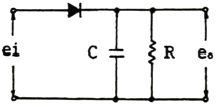
- 0.1
- 1
- 10
- 100
(정답률: 알수없음)

2. 그림에서 Vi=Vm sinα [V]일 때 부하저항 RL양단에 나타나는 직류 평균 출력전압[V]은? (단,
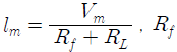
는 다이오드의 순방향 저항)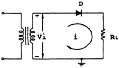
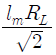
- lmRL
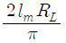
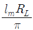
(정답률: 알수없음)
3. 그림의 회로에서 V1=3[V], Rf=450[kΩ], R1=150[kΩ]일 때 출력전압 Vo[V]는?
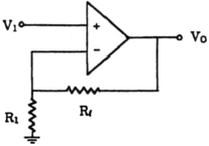
- 1[V]
- 12[V]
- 15[V]
- 18[V]
(정답률: 알수없음)
4. 비동기식 계수기(counter)의 일반적인 설명으로 거리가 먼 것은?
- 리플 카운터라고도 한다.
- 동작속도가 동기식보다 비교적 느리다.
- 전단의 출력이 다음 단의 입력이 된다.
- 동작속도가 동기식보다 고속이다.
(정답률: 알수없음)
5. JK 플립플롭의 동작에 관한 설명으로 옳지 않은 것은?
- J=0, K=0일 때는 변하지 않는다.
- J=0, K=1일 때는 Q가 0으로 된다.
- J=1, K=0일 때는 Q가 1로 된다.
- J=1, K=1일 때는 반전되지 않는다.
(정답률: 알수없음)
6. 완충증폭기(Buffer Amp)에 관한 설명으로 틀린 것은?
- 발진기 출력과 부하 사이에 결합용도로 사용한다.
- 높은 입력저항의 특성을 갖는다.
- 부하의 변동이 발진회로에 영향을 미치지 않도록 한다.
- 회로구성은 이미터접지 증폭회로이다.
(정답률: 알수없음)
7. 다음 중 전력 증폭기의 종류에 속하지 않는 것은?
- A급 증폭기
- B급 증폭기
- AB급 증폭기
- AC급 증폭기
(정답률: 알수없음)
8. 다음의 자기 바이어스 회로(self-bias)에서 IC의 ICO에 대한 안정계수 S의 이론적 최소치는 어느 경우인가? (단, 1+β＞＞RB/RE, RB=R1//R2 이다.)
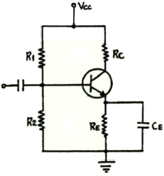
- RB/RE → 100 일 때
- RB/RE → 0 일 때
- RB/RE → ∞ 일 때
- RB/RE → 1+β 일 때
(정답률: 알수없음)
9. 그림과 같은 전력증폭기에서 부하 ZL의 크기는? (단, 권선비는 N:1의 이상변압기이다.)
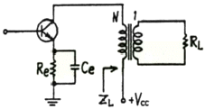
- RL
- 1/RL
- RL+Re
- N2RL
(정답률: 알수없음)
10. B급 푸시풀 증폭기의 출력 파형에 포함된 고조파는?
- 기수 고조파
- 우수 고조파
- 제2, 제3 고조파
- 기수와 우수의 모든 고조파
(정답률: 알수없음)
11. 다음 연산증폭기 회로에서 입출력 특성은? (단, 연산증폭기 A1, A2와 다이오드 D1, D2는 이상적임)
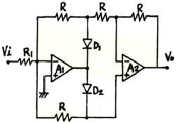
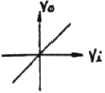
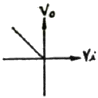
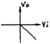
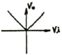
(정답률: 알수없음)
12. 진폭변조에서 신호전압을 eS = ES sin ωS t, 반송파 전압을 eC = EC sin ωC t라 할 때 피변조파 전압 e(t)를 표시하는 것은?
- e(t) = (EC + ES ) sin ωS t
- e(t) = (EC + ES ) sin ωC t
- e(t) = (EC + ES sin ωS t) sin ωC t
- e(t) = (EC + ES sin ωC t) sin ωS t
(정답률: 알수없음)
13. 다음 중 단일 측파대 통신방식에 사용되는 변조회로는?
- 베이스 변조
- 컬렉터 변조
- 제곱 변조
- 링 변조
(정답률: 알수없음)
14. 논리식
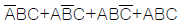
을 간단히 하면?- B(A+C)
- AB+BC+AC
- C(A+B)
- A+B+C
(정답률: 알수없음)
15. 전압직렬(Votage Series) 궤환증폭기의 일반적인 특성이 아닌 것은?
- 주파수 대역폭이 증가한다.
- 비직선 일그러짐이 감소한다.
- 입력저항이 감소한다.
- 출력저항이 감소한다.
(정답률: 알수없음)
16. 변조도 60[%]의 AM에서 반송파의 평균 전력이 100[W]일 때, 피변조파의 평균전력은 몇 [W] 인가?
- 118
- 130
- 136
- 160
(정답률: 알수없음)
17. 다음 중 OP-AMP를 이용한 미분기에서 출력은 무엇에 비례하는가?
- 시정수
- offset 전압
- offset 전류
- 1/시정수
(정답률: 알수없음)
18. 다음과 같은 다이오드 회로에서 전달특성으로 적합한 것은? (단, VZ=ZD1과 DZ2의 항복 전압이다.)
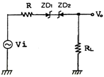
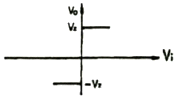
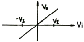
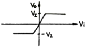
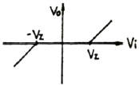
(정답률: 알수없음)
19. 출력전압이 40[V]인 증폭기에서 2-j2√3[V]의 전압을 궤환시켰을 때 궤환율 β는 얼마인가?
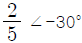
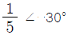
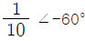
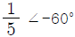
(정답률: 알수없음)
20. 다음 중 발진회로에 대한 설명으로 틀린 것은?
- CR 발진기는 비교적 낮은 주파수에 적합하다.
- 수정진동자의 Q는 매우 크다.
- 부궤환을 시키면 발진 주파수가 증가한다.
- 수정발진기는 유도성 리액턴스에서 동작시킨다. 제2과목 방송통신 기기
(정답률: 알수없음)
2과목: 방송통신 기기
21. 표준(중파) 방송의 증폭회로에서 강도와 출력을 높이기 위한 중간 주파수[kHz]는?
- 55
- 110
- 455
- 900
(정답률: 알수없음)
22. 라디오에 사용되는 전원회로의 조건이 아닌 것은?
- 직류 출력 전압이 정격일 것
- 전류 용량은 최대 부하전류보다 충분히 여유가 있을 것
- 스위치를 끌 때 과도전류로 정류기가 파손되지 않을 것
- 리플(ripple) 전압이 클 것
(정답률: 알수없음)
23. 위성방송을 수신하는 안테나의 종류와 거리가 먼 것은?
- 혼 안테나
- 파라볼라 안테나
- 야기 안테나
- 카세그레인 안테나
(정답률: 알수없음)
24. 다음 중 CATV 방송관련 사업자 및 공급자가 아닌 것은?
- SO
- PP
- NO
- SN
(정답률: 알수없음)
25. 다음 중 방송통신기기에 갑자기 전원이 차단되었을 때 사용되는 것은?
- UPS
- TBC
- ONU
- VCR
(정답률: 알수없음)
26. 다음 중 시간영역 상에서 주로 파형을 측정하는데 가장 적합한 측정기는?
- Oscilloscope
- Spectrum Analyzer
- Network Analyzer
- Sweep Generator
(정답률: 알수없음)
27. 다음 중 정지화상의 부호화를 위한 것으로 Frame 단위의 처리가 요구되는 편집 시스템용 압축방식으로 널리 사용되는 것은?
- JPEG
- MPEG-1
- MPEG-3
- MHEG
(정답률: 알수없음)
28. 다음 중 디지털 TV 방송의 특징이 아닌 것은?
- 고품질의 다채널 방송이 가능하다.
- 한 채널당 대역폭이 8[MHz]이다.
- 고품질의 비디오 및 오디오 서비스가 가능하다.
- 멀티미디어 서비스와의 상호 연동성이 우수하다.
(정답률: 알수없음)
29. 다음 중 다중방송에 속하지 않는 것은?
- 문자다중방송
- 음성다중방송
- 영상다중방송
- FM다중방송
(정답률: 알수없음)
30. 다음 중 방송에 사용될 영상소재를 컴퓨터 영상장치에 의하여 입력받아 스토리지(Storage)에 저장, 인코딩, 방송 소재검색, 미디어관리, 캡처 등의 기능을 수행하는 것은?
- Betacam System
- Master Control System
- ADC System
- Capture System
(정답률: 알수없음)
31. 다음 중 TV에서 주사형태가 아닌 것은?
- 수평주사
- 수직주사
- 비월주사
- 동기주사
(정답률: 알수없음)
32. 국내 NTSC-TV 방식에서 영상반송파를 기준으로 하여 음성 반송파의 주파수는 얼마에 설정되는가? (단, 영상반송파는 fv 이다.)
- fv + 6.5 [MHz]
- fv + 5.5 [MHz]
- fv + 4.5 [MHz]
- fv + 3.5 [MHz]
(정답률: 알수없음)
33. 영상신호의 색신호 성분에 대하여 그 위상과 진폭을 브라운관상에 벡터로 표시하는 장치는?
- 마스터 모니터
- 벡터스코프
- 파형 모니터
- TBC
(정답률: 알수없음)
34. 다음 중 디지털 위성방송의 서비스에서 하나의 프로그램을 여러 개의 채널을 통해 시작 시간을 각기 달리하여 동영상을 제공하는 서비스는?
- EPG
- CAS
- PPV
- NVCO
(정답률: 알수없음)
35. 다음 중 NTSC 아날로그 컬러 TV에서 1초 동안 주사되는 수평 주사선수는 약 몇 개인가?
- 13575
- 14000
- 15000
- 15750
(정답률: 알수없음)
36. TV 방송에 사용되는 컬러가 아닌 것은?
- 적색(red)
- 청색(blue)
- 노란색(yellow)
- 초록색(green)
(정답률: 알수없음)
37. 다음 중 중계차와 같은 원격지의 신호원을 스튜디오 내부의 동기 신호와 일치시키는 것은?
- 블랭킹 펄스
- FS(Frame Synchronizer)
- 구동 펄스
- 스위쳐(Switcher)
(정답률: 알수없음)
38. 다음 중 지상파 방송과 비교한 위성방송의 장점이 아닌 것은?
- 넓은 주파수 대역을 통해 대용량의 정보를 전송할 수 있다.
- 단일 방송파로 넓은 지역에 서비스를 제공할 수 있다.
- 방송 시스템의 초기 구축 비용이 저렴하다.
- 비상 재해시 방송망 확보가 가능하다.
(정답률: 알수없음)
39. 다음 중 안테나 복사 패턴의 최대점에서 Main Lobe의 크기와 정반대 방향에서 형성된 Back Lobe의 크기 비를 나타내는 것은?
- 상대이득
- 절대이득
- 전ㆍ후방비
- 정재파비
(정답률: 알수없음)
40. TV 영상, 음성 반송파 신호를 합성하는 CIN 다이플렉서의 요구 특성과 거리가 먼 것은?
- 전력 이득이 커야 한다.
- 영상, 음성의 입력 단자 상호 간에 간섭이 없어야한다.
- 신호 삽입으로 인한 주파수 특성에 변화가 없어야한다.
- 입력 임피던스가 일정하여야 한다. 제3과목 방송미디어 공학
(정답률: 알수없음)
3과목: 방송미디어 공학
41. 디지털 지상파 방송의 설명과 가장 거리가 먼 것은?
- 화질과 음질의 향상
- HDTV의 발전 촉진
- 다채널화
- 잡음의 영향 증가
(정답률: 알수없음)
42. 다음 중 Key Light에 의해 생기는 어두운 부분을 수정하기 위한 조명이며 베이스 라이트와 겸용되는 경우의 조명은?
- Back Light
- Touch Light
- Fill Light
- Horizont Light
(정답률: 알수없음)
43. 44.1[Hz]로 샘플링한 CD의 경우 이론적으로 재생할 수 있는 최대 주파수에 가장 근접한 주파수[Hz]는?
- 10
- 16
- 20
- 25
(정답률: 알수없음)
44. 통신위성을 이용하여 현장에서 직접 뉴스 소재를 취재 하여 송ㆍ수신을 할 수 있는 것은?
- ENG
- FPU
- SNG
- S시
(정답률: 알수없음)
45. 다음 중 Internet을 이요 TV 수상기에서 각종 화상정보 등을 상호 대화 형식으로 제공하는 쌍방향 시스템은?
- Teletext
- CATV
- IPTV
- CCTV
(정답률: 알수없음)
46. 다음 중 멀티미디어의 활용분야가 아닌 것은?
- VOD(Video On Demand)
- 출판
- 프레젠테이션
- 팩시밀리
(정답률: 알수없음)
47. MPEG-2 영상부호화에 기본적으로 사용되는 DCT 변환에서 수행되는 블록단위는?
- 4×4
- 8×8
- 16×16
- 32×32
(정답률: 알수없음)
48. 다음 중 NTSC식 컬러 TV의 색부반송파 주파수는?
- 3.58 [MHz]
- 4.5 [MHz]
- 41.25 [MHz]
- 45.75 [MHz]
(정답률: 알수없음)
49. 다음 중 방송계 미디어와 가장 관련 없는 것은?
- HDTV
- EDIFACT
- DMB
- CATV
(정답률: 알수없음)
50. 다음 중 조명의 기본적인 요건과 거리가 먼 것은?
- 밝기
- 대비
- 노출시간
- 눈부심
(정답률: 알수없음)
51. 다음 중 마이크로폰의 제원을 표시하는 파라미터가 아닌 것은?
- Maximum sound pressure level
- Sensitivity
- Frequency response
- Compression ratio
(정답률: 75%)
52. 국내 지상파 아날로그 컬러 TV 방송의 설명으로 거리가 먼 것은?
- 비월주사 방식으로 1프레임을 2회에 걸쳐 주사한다.
- 화면의 가로:세로가 4:3 또는 16:9 이다.
- 음성의 변조방식은 FM이다.
- 채널당 주파수 대역폭은 6[MHz]이다.
(정답률: 알수없음)
53. 다음 중 영상미디어의 압축방식이 아닌 것은?
- 공간적 중복성 압축방식
- 시간적 중복성 압축방식
- 고정적 중복성 압축방식
- 통계적 중복성 압축방식
(정답률: 알수없음)
54. 다음 중 디지털변조에 속하지 않는 것은?
- PM
- ASK
- FSK
- PSK
(정답률: 알수없음)
55. 다음 전송매체 중 가장 전송속도가 빠른 것은?
- 동축 케이블
- UTP 케이블
- 광섬유 케이블
- 전화 케이블
(정답률: 알수없음)
56. 이동 중에 고음질의 음향 및 데이터 또는 영상서비스가 가능한 방식으로 방송과 통신의 대표적인 융합이라고 할 수 있는 것은?
- 데이터방송(Data Broadcasting)
- NGCN(Next Convergence Network)
- DMB(Digital Multimedia Broadcasting)
- BCN(Broadband Convergence Network)
(정답률: 알수없음)
57. 다음 중 멀티미디어의 의미로 가장 적합한 것은?
- 기존의 미디어 외에 전자 기술의 발달로 생성된 새로운 정보 교환 및 통신수단을 의미한다.
- 문자, 그림, 소리, 동영상들의 복합된 형태의 정보를 컴퓨터와 사람 간에 상호전달 하는 것을 의미한다.
- 연관된 정보 간에 링크로 연결하여 정보를 내비게이션 할 수 있도록 하는 첨단기술을 의미한다.
- 상호 간에 정보를 전달하는 것을 의미한다.
(정답률: 알수없음)
58. 다음 중 컬러 TV에서 색차신호를 나타내는 것은?
- 휘도신호+원색신호
- 휘도신호-원색신호
- 원색신호-휘도신호
- 원색신호+색신호
(정답률: 알수없음)
59. 다음 방송의 형태 중 주파수에 의한 분류에 해당하지않는 것은?
- 다중방송
- 단파방송
- 중파방송
- 초단파방송
(정답률: 알수없음)
60. 스테레오 시스템에서 두 개의 스피커로 주파수와 음압이 동일한 음을 동시에 재생할 경우, 인간의 귀에는 먼저 도달한 소리만 들리는 현상과 관련되는 것은?
- 도플러 효과
- 마스킹 효과
- 하스 효과
- 임계 효과
(정답률: 알수없음)
4과목: 방송통신 시스템
61. 다음 중 국내의 지상파 디지털 TV 변조 방식은?
- BST-OFDM
- EUREKA-147
- DVB-T
- 8-VSB
(정답률: 알수없음)
62. 다음 중 PLL의 기본적인 구성요소가 아닌 것은?
- VCO
- 위상검출기
- LPF
- 신호변조기
(정답률: 알수없음)
63. ATSC에서 케이블과 지상파 방송에서 전자프로그램 안내, 가상 채널, 프로그램 등급 등의 정보에 대하여 정한 표준은?
- SMPTE
- SI
- PSIP
- MPEG
(정답률: 알수없음)
64. TV 신호 중 휘도신호의 구성으로 옳은 것은?
- 0.30R+0.59G+0.11B
- 0.59R+0.11G+0.30B
- 0.30R+0.30G+0.59B
- 0.59R+0.30G+0.11B
(정답률: 알수없음)
65. FM에서 S/N비를 향상시키기 위한 방법과 거리가 먼 것은?
- 변조지수를 크게 한다.
- 주파수 대역폭을 크게 한다.
- 반송파의 주파수를 크게 한다.
- 프리엠퍼시스 회로를 채택한다.
(정답률: 알수없음)
66. 다음 중 무궁화위성 3호의 방송용 중계기의 대역폭은?
- 14[MHz]
- 24[MHz]
- 27[MHz]
- 42[MHz]
(정답률: 50%)
67. 중계소의 위치 선정시 고려대상이 아닌 것은?
- 도로 주변지역 또는 도로개설이 가능한 곳
- 철탑, 통신용 국사 건축에 소요되는 대지 확보가 쉬운곳
- 인근 지역에 레이더 시설이 없는 곳
- 인근에 호수가 많은 곳
(정답률: 알수없음)
68. CATV에 대한 설명으로 관계가 먼 것은?
- 설비의 운용 및 유지보수 비용이 발생한다.
- 고층 건물 등에 의한 수신장애가 발생한다.
- 1개의 케이블로 많은 양의 방송채널을 송신할 수 있다.
- 기존 방송을 재송신하거나 스포츠, 쇼핑, 영화, 게임 등과 같은 전문채널을 제공하기도 한다.
(정답률: 알수없음)
69. 다음 중 통신위성의 개발, 발사, 운용 및 관리 등을 수행하는 국제적인 위성통신기구는?
- INSAT
- INTELSAT
- WESTER
- ISO
(정답률: 알수없음)
70. 위성 방송의 상향 링크 설계시 고려하지 않아도 되는 것은?
- 지구국 송신 출력
- 지구국 안테나 이득
- 자유공간 손실
- 지구국 수신기 G/T
(정답률: 알수없음)
71. 다음 중 스트리밍 기술과 직접적으로 관련이 없는 것은?
- VoIP
- IP 망에서 VOD 서비스
- Web Camera를 통한 화상 서비스
- JPEG를 이용한 화상 서비스
(정답률: 알수없음)
72. 다음 중 OFDM(Orthogonal Frequency Division Multiplexing)과 관련이 적은 것은?
- 다수의 반송파를 사용하는 변복조 기술이다.
- 페이딩 현상에 민감하지 않다.
- 상호변조 현상이 발생하지 않는다.
- FFT(Fast Fourier Transform) 기술로 변복조가 가능하다.
(정답률: 알수없음)
73. 다음 중 종합유전방송(CATV) 시스템의 주요 구성요소와 거리가 먼 것은?
- 송신소
- 가입자계
- 헤드엔드
- 전송계
(정답률: 알수없음)
74. 방송수신기의 특징 중 어느 정도의 미약한 전파까지 수신할 수 있는지의 능력을 나타내는 것은?
- 안정도
- 충실도
- 선택도
- 감도
(정답률: 알수없음)
75. CATV 시스템에서 1차측 신호전력의 일부를 2차측으로 결합시키는 장치로 신호를 간선에서 지선으로 분할시 사용되는 것은?
- 간선 증폭기
- 분배 증폭기
- 보안기
- 방향 결합기
(정답률: 알수없음)
76. CATV 방송국에서 가입자까지의 전송로를 가장 옳게 구성한 것은?
- 초간선→간선→분배선→인입선
- 간선→초간선→분배선→인입선
- 인입선→초간선→간선→분배선
- 인입선→간선→초간선→분배선
(정답률: 알수없음)
77. 송신소 시스템 설계시 고려해야 할 기본조건으로 거리가 먼 것은?
- 전파의 전파 특성상 TV방송, FM방송, 중파방송의 설계 조건은 동일하다.
- 자연재해의 영향이 적은 곳에 설치한다.
- 운용요원의 동근 및 거주가 용이한 곳에 설치한다.
- 전원선의 인입과 기기의 반입이 용이한 장소에 설치한다.
(정답률: 50%)
78. 지상 10000[km] 정도의 궤도인 비정지 위성으로 탐사, 측위 및 이동통신위성의 역할을 주로 하는 것은?
- 저궤도 위성
- 중궤도 위성
- 고궤도 위성
- 극궤도 위성
(정답률: 알수없음)
79. 방송용 M/W(Microwave) 회선 설계시 요구되는 사항과 거리가 가장 먼 것은?
- 주로 3-13[GHz] 정도의 주파수대 RF Carrier를 이용하여 TV신호를 전송한다.
- M/W 장비는 조정실 입력 Rack와 최단거리에 설치하도록 한다.
- M/W 안테나는 1:1(송:수신)로 구성하는 것을 기본으로 한다.
- M/W 시스템을 위한 전원은 AC 방식으로 하여 비상시 전원 공급을 위한 Battery와 충전기를 부동충전 방식으로 구성한다.
(정답률: 40%)
80. 가입자 100명에 대한 연결을 망형 회선망으로 구성시 필요한 최소 회선수는?
- 4950
- 6950
- 8900
- 9900
(정답률: 알수없음)
5과목: 전자계산기 일반 및 방송설비기준
81. 다음 중 데이터베이스의 특성에 속하지 않은 것은?
- 중복데이터 배제
- 비밀보호장치의 유지
- 데이터 상호간의 연결성
- 프로그램과 데이터의 종속성
(정답률: 알수없음)
82. 부동소수점 표현에서 정규화(normalize)시키는 이유는?
- 숫자표시를 간결하게 하기 위하여
- 연산속도를 증가시키기 위하여
- 유효숫자를 늘리기 위하여
- 수치계산을 편리하게 하기 위하여
(정답률: 알수없음)
83. 시스템 동작 개시 후 최초로 주기억장치에 프로그램을 load 하는 것은?
- operating system
- bootstrap loader
- mapping operator
- editor
(정답률: 알수없음)
84. 주소신호선의 수를 N 개, 데이터의 수를 n 비트, IC의 기억용량을 M 비트라 할 때 관계식은 N=log2(M/n)이다. 64K bit의 LSI 칩으로 4bit씩 묶어서 입ㆍ출력하는 경우 신호선의 수는?
- 10
- 12
- 14
- 16
(정답률: 알수없음)
85. 각 프로세스에게 순차적으로 일정한 Time Slice 동안 처리기를 차지하도록 하는 프로세서(스케줄링) 정책은?
- Deadlock
- Swapping
- Round Robin
- Spooling
(정답률: 알수없음)
86. 다음 중 컴퓨터의 명령어 형식에서 연산자 형식이 아닌것은?
- 메모리 참조 형식
- 레지스터 참조 형식
- 주소 참조 형식
- 입출력 명령 형식
(정답률: 알수없음)
87. 지정된 조건을 만족하는 데이터 항목을 확인하는데 필요한 평균시간을 무엇이라 하는가?
- Cycle time
- Access Time
- Seek time
- Search Time
(정답률: 알수없음)
88. 다음 중 에러검출 코드는?
- ASCII 코드
- EBCDIC 코드
- Hamming 코드
- BCD 코드
(정답률: 알수없음)
89. 캐시 메모리의 기록 정책 가운데 쓰기(write) 동작이 이루어질 때마다 캐시 메모리와 주기억장치의 내용을 동시에 갱신하는 방식은?
- write-through
- write-back
- write-once
- write-all
(정답률: 알수없음)
90. 다음 IP 주소에 의해 동종 또는 이종 링크에 다중 접속을 실현할 수 있는 것은?
- roaming
- multihoming
- hand-off
- 무선 LAN
(정답률: 알수없음)
91. 다음 중 방송편성의 단위가 되는 방송 내용물을 말하는 것은?
- 방송편집
- 방송보도
- 방송광고
- 방송프로그램
(정답률: 알수없음)
92. 다음 중 무선국의 허가증에 기재할 사항이 아닌 것은?
- 허가연월일 및 허가번호
- 시설자의 성명 또는 명칭
- 공중선전력
- 무선종사자의 성명과 인적사항
(정답률: 알수없음)
93. 다음 중 방송법의 목적이 아닌 것은?
- 방송의 자유와 독립보장
- 국민문화ㆍ체육발전의 향상 도모
- 시청자의 권익보호
- 민주적 여론형성
(정답률: 알수없음)
94. 방송을 양호하게 수신할 수 있는 구역으로 전계강도가 방송통신위원회가 정하여 고시하는 기준 이상인 구역은?
- 방송구역
- 블랭킷에어리어
- 전파구역
- 셀에어리어
(정답률: 알수없음)
95. 다음 중 ( ) 안에 알맞은 것은?
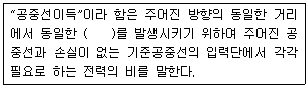
- 자계 또는 자력밀도
- 전파 또는 전파밀도
- 전계 또는 전력밀도
- 전계 또는 자력밀도
(정답률: 알수없음)
96. 선로설비의 회선상호간, 회선과 대지간, 회선의 심선 상호간의 절연저항이 알맞은 것은?
- 직류 380[V] 절연저항계로 측정하여 1[MΩ] 이상
- 직류 500[V] 절연저항계로 측정하여 10[MΩ] 이상
- 교류 220[V] 절연저항계로 측정하여 20[MΩ] 이상
- 교류 380[V] 절연저항계로 측정하여 50[MΩ] 이상
(정답률: 알수없음)
97. 다음 중 정보통신공사업자 외의 자가 시공할 수 있는 경미한 공사의 범위에 해당되는 것은?
- 군 및 경찰의 긴급작전을 위한 공사로서 방송통신위원회가 관계 중앙행정기관의 장과 협의하여 정하는 공사
- 신설되는 방송전송ㆍ선로설비공사
- 연면적 10000평방미터 이상의 건축물에 자가유선방송설비, 구내 방송설비 및 폐쇄 회로 텔레비전의 설비공사
- 건축물에 설치되는 50회선 이하의 구내통신 선로 설비공사
(정답률: 알수없음)
98. 방송을 목적으로 하는 지상의 무선국을 관리ㆍ운용하며 이를 이용하여 방송을 행하는 사업은?
- 종합유선방송사업
- 위성방송사업
- 인터넷방송사업
- 지상파방송사업
(정답률: 알수없음)
99. 다음 중 감리원의 업무 범위에 해당하지 않는 것은?
- 공사업자가 작성한 시공 상세도면의 검토ㆍ확인
- 공사진척 부분에 대한 조사 및 검사
- 재해예방대책 및 안전관리의 확인
- 공사계획 및 공정표의 작성
(정답률: 알수없음)
100. 방송통신위원회에서 방송사업의 승인시 심사사항이 아닌 것은?
- 방송의 공적 책임ㆍ공정성ㆍ공익성의 실현 가능성
- 방송프로그램의 유통 및 보급계획의 가능성
- 지역적ㆍ사회적ㆍ문화적 필요성과 타당성
- 방송발전을 위한 지원계획
(정답률: 알수없음)
반송파 주기의 10배로 시정수를 설정하고자 한다면, 시정수는 반송파 주기의 10분의 1이 되어야 한다.
반송파 주파수가 100[MHz]이므로, 반송파 주기는 1/100[MHz] = 10[ns]이다. 따라서 시정수는 10[ns]/10 = 1[nF]가 되어야 한다.
C[pF]로 답을 구하라고 했으므로, 1[nF] = 1000[pF]이므로, C[pF]는 1000이 된다.
따라서 정답은 "10"이다.